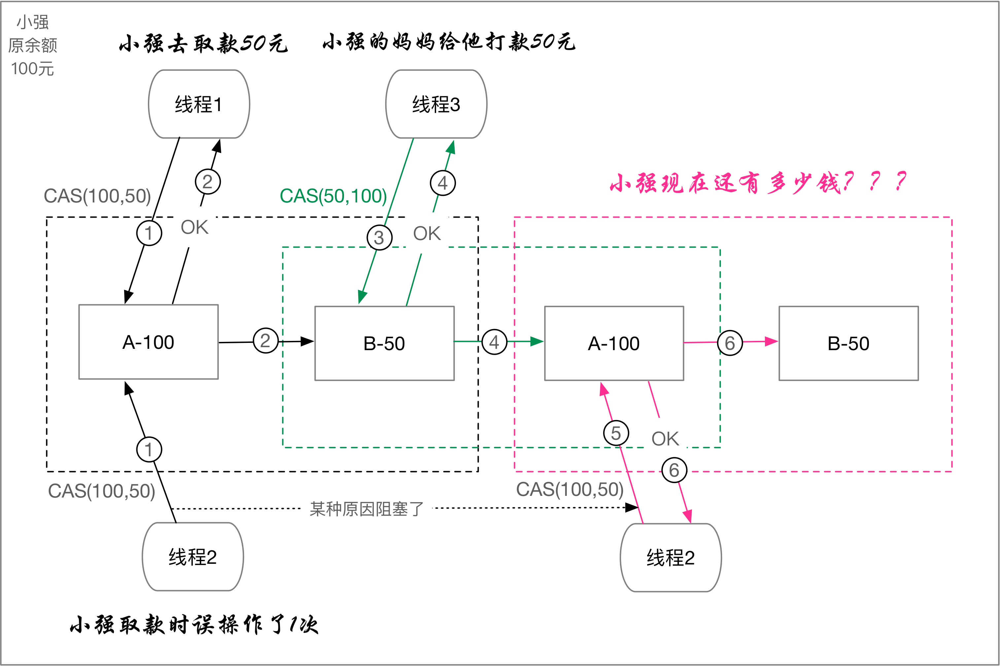

什么是CAS？(What)
所谓【CAS】也即是Compare And Swap的缩写，翻译为【比较并交换】，也叫做同步原语，或者CAS原语。
为什么要使用CAS？(Why)
随着多核处理系统越来越便宜和普及，真正的多线程并行处理越来越随处可见，那么，怎么处理好多线程间【共享资源】的安全问题(数据不出错)？在保证安全之下，又怎么提高多线程间访问共享资源(内存)的效率？
- 在Java编程语言层面，可以使用synchronized解决多线程间共享资源安全的问题，但是其非常重，得让其他线程都阻塞，效率非常低；
- 在底层硬件层面，现在各大厂商的处理器都支持【原子操作指令】，也就是所谓的【比较并交换】或者叫【CAS原语】。
CAS 操作包含三个操作数：内存位置（V）、预期原值（A）和 新值(B)。
如果内存位置的值与预期原值相匹配，那么处理器会自动将该位置值更新为新值。否则，处理器不做任何操作。无论哪种情况，它都会在 CAS 指令之前返回该位置的【值】。
（在 CAS 的一些特殊情况下将仅返回 CAS 是否成功，而不提取当前值。）CAS 有效地说明了“我认为位置 V 应该包含值 A；如果包含该值，则将 B 放到这个位置；否则，不要更改该位置，只告诉我这个位置现在的值即可。”
基于 CAS 的并发算法称为无阻塞算法，因为线程不必再等待阻塞。无论CAS操作成功还是失败，在任何一种情况中，
它都在可预知的时间内完成。如果 CAS 失败，调用者不会被挂起而是可以重试(轮询)CAS操作或采取其他适合的操作。
什么场景下使用原子操作？(Where-When)
- 多线程、高并发场景下，底层实现都得依赖CAS操作；
使用CAS会存在哪些问题？
CAS虽然很高效的解决原子操作，但CAS仍然存在三大问题。ABA问题、循环时间长开销大、只能保证一个共享变量的原子操作。
①：ABA问题；
因为CAS需要在操作值的时候检查下值有没有发生变化，如果没有发生变化则更新，但是如果一个值原来是A，变成了B，又变成了A，
那么使用CAS进行检查时会发现它的值没有发生变化，但是实际上却变化了。ABA问题的解决思路就是使用版本号。在变量前面追加上版本号，
每次变量更新的时候把版本号加一，那么A－B－A 就会变成1A-2B－3A。从Java1.5开始JDK的atomic包里提供了一个类AtomicStampedReference
来解决ABA问题。这个类的compareAndSet方法作用是首先检查当前引用是否等于预期引用，并且当前标志是否等于预期标志，如果全部相等，
则以原子方式将该引用和该标志的值设置为给定的更新值。

AtomicStampedReference示例代码：
②：循环时间长开销大；
自旋CAS如果长时间不成功，会给CPU带来非常大的执行开销。
③：只能保证一个共享变量的原子操作。
当对一个共享变量执行操作时，我们可以使用循环CAS的方式来保证原子操作，但是对多个共享变量操作时，循环CAS就无法保证操作的原子性，
这个时候就可以用锁，或者有一个取巧的办法，就是把多个共享变量合并成一个共享变量来操作。比如有两个共享变量i＝2,j=a，合并一下ij=2a，
然后用CAS来操作ij。从Java1.5开始JDK提供了AtomicReference类来保证引用对象之间的原子性，你可以把多个变量放在一个对象里来进行CAS操作。